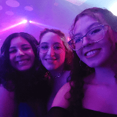
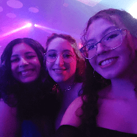

Como profissional, Julia arrasa em várias áreas: social media, captação de imagens e jornalismo diário. Já deixou seu brilho por grandes emissoras de tv, universidades renomadas, agências de comunicação famosas e umas bem mais ou menos também. Ela não trabalha, ela faz arte.
Falando de arte, Julia inspira grandes nomes da música. Entre eles estão Taylor Swift, Olivia Rodrigo, Demi Lovato, Justin Bieber, Anavitória e Jão. Todos sabemos que foram as aventuras dela que inspiraram as maiores e melhores músicas do pop mundial.
Em sua vida pessoal, a querida é uma amiga fiel. “Queria uma fofoquinha” é uma de suas frases mais comuns, seguida de “Mas posso ser polêmica?” sim, mas isso não quer dizer que ela não se dedica às suas amizades, né? Topa a maioria das coisas e das ideias, se preocupa com o bem-estar de quem está ao seu redor e preza por um ambiente acolhedor e saudável.
Quando se trata de amor, Julia é a última das apaixonadas. Emocionada como toda sáfica, vingativa quando a pessoa merece e muito, mas muito, intensa. A pessoa certa pode não ter aparecido ainda, mas vai. Até lá, vai continuar sendo a que mais serve entretenimento e apelidos aos fãs.
Julia Gomes nasceu no dia 12 de dezembro de 2002, em São José dos Campos. É jornalista, cinegrafista, cinéfila e uma das maiores divas pop do momento em todo o mundo.
Nossa diva se formou em 2023 em Jornalismo pela UNIVAP. Foi lá que conquistou seus maiores fãs. Além de muito talento jornalístico, ela possui muitos outros dons, como: fotografia, filmagem, fofocar, sofrer por ficante, tirar tarot, se vestir bem e muito mais.
Ao longo dessa jornada, Julia conquistou fãs por onde passou graças ao seu carisma. Adora usar figurinhas de gatinhos, frequentar cafés superfaturados e bares estéticos que servem a sua boa e velha cerveja (mas não se deixe enganar, ela adora uma boa caipirinha e skol beats) e fazer piqueniques. Tudo isso enquanto encontra o ângulo perfeito de uma foto muito cool para se postar nos stories. Seus outros hobbies incluem assistir produções audiovisuais - como filmes, séries e curtas - andar por aí, ouvir música e conhecer museus e lugares novos.
 
